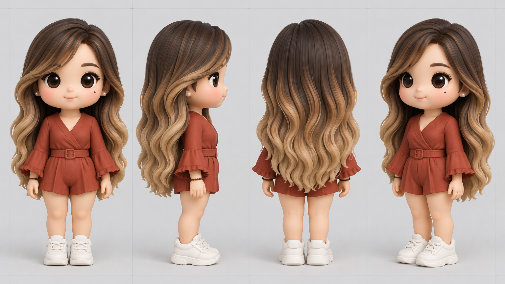
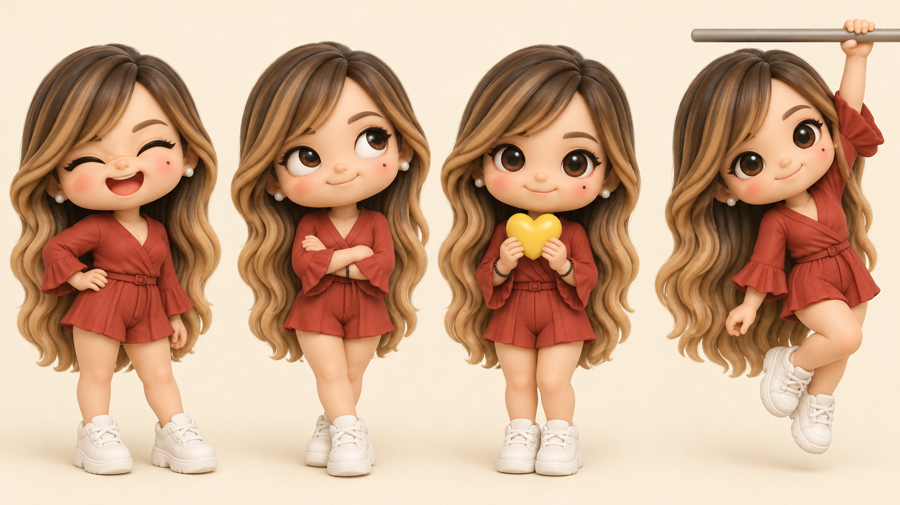
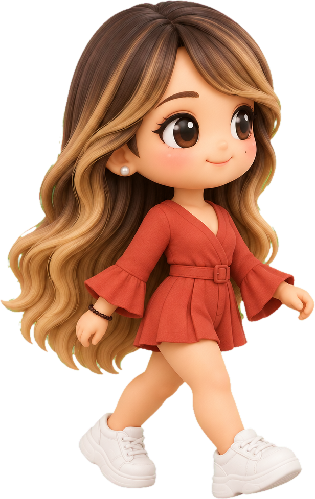

O que faz dela a Guadalupe
A primeira menina da coleção: o cabelo longo com mechas mel e o macaquinho terracota entregam quem ela é de longe.
- Cabelo longo com mechasOndulado, raiz castanha clareando até o mel nas pontas.
- Franja de ladoComprida, caindo sobre um lado do rosto.
- Brincos de pérolaPequenininhos, de pressão.
- Sorriso fácilBochecha corada e uma pintinha no rosto.
- Macaquinho terracotaTranspassado, com cinto e manga boca de sino.
- Pulseira de miçangaFininha e escura, no pulso.
Macaquinho
#C94032Raiz
#503428Mechas
#CF8C4DPele
#F5BE9APérola
#F3EEE6Coração
#F2C230Verde-mar
#1D4B4CBochecha
#F2A08FDe todos os lados
Frente, perfil, costas e três-quartos. É a referência para quem for animar ou produzir a boneca.

Quatro humores
Para figurinhas, reações e thumbnails do canal.

Gargalhadaolhinhos fechados
Expectativarevirando os olhos
Carinhocoração amarelo
Realidadependurada na barra
Vem comigo
Role a página e ela anda junto. Volte, e ela volta.

Chegou!
Conheça também os outros bonecos da coleção: ver o Wez, ver o Cacau e ver o Antônio.